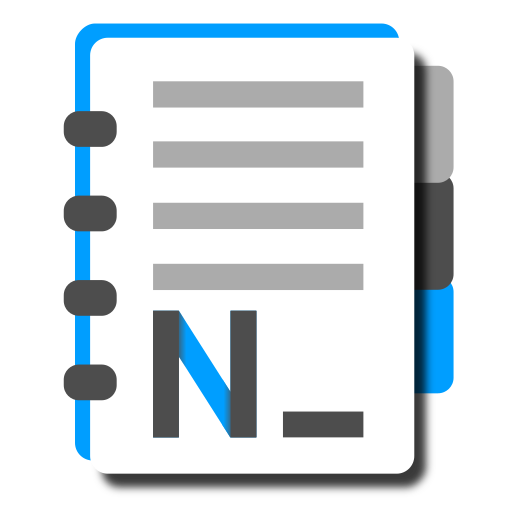

Notbad
The text editor that is not bad, but exactly what you need.
Overview
Notbad is a lightweight, minimalist text editor built natively for Windows with C++ and the Win32 API. It is inspired by the classic Notepad, and it keeps that fast, familiar feel while adding the small tools you miss.
Notbad sits in the middle on purpose:
- It is not as empty as Notepad.
- It is not as stuffed as VSCode.
You get an editing window, the classic menus, a status bar and keyboard shortcuts. There are no toolbars and no settings dialog. Everything Notbad offers is in its menus.
Design principles
- Rigorously clean. No toolbars or cluttered buttons.
- No settings menu. Every option is within reach in the regular menus.
- Optional features. The file tree, line numbers, indentation support and line highlighting act on demand. Turn them on when you need them.
The icon
The notepad in the icon has its cover flipped fully to the back, which means zero barriers between your click and the start of typing. The colored tabs on the side show that Notbad works with multiple documents. The stylized N_ places a blinking cursor after the N, as if the typing that follows replaces something old.
Getting started
Requirements
- Windows 7 or later.
- 64-bit (x64) only.
Opening files
- Use File → Open, or pass a file name on the command line.
- Drag a file into the window to open it in a new tab.
- Drag a folder into the window to open it in the file tree.
New documents and empty files use UTF-8 by default.
Interface
The window has four parts: the menu bar, the tab strip, the editing area and the status bar. The file tree and line numbers appear beside the editing area only when you turn them on.
The status bar resizes with the window. It also confirms some actions, for example when auto-indent is switched on.
Notbad remembers the state of the file tree when you close the program.
Tabs and documents
- Multiple documents. Work with many files in one window. Drag a tab to reorder it.
- Unsaved changes. A
*before the file name marks a tab with unsaved changes. - Save All. Press Ctrl+Alt+S to save every open file.
- Close tab. Press Ctrl+F4.
- Undo history. Each tab keeps its own multi-level undo history.
If you drag a file that is already open, Notbad does not create a duplicate tab. It switches to the existing tab. If that tab has unsaved changes, Notbad asks whether to replace the content (discarding your changes) or leave the file unopened.
File tree
Open a folder with Ctrl+Shift+O to show a side panel with the folder’s files and subfolders. You can also drag and drop a folder onto Notbad and it will open automatically. The tree uses the system’s native icons.
Show or hide the panel with Ctrl+T, dragging a folder into Notbad opens the tree at that folder.
Create folders Ctrl+Shifit+N or files Ctrl+N.
You can Cut|Copy|Paste folders or files with Ctrl+X|C|V, and Rename F2 or Delete Del them.
Press ENTER on a file to open it.
Line numbers
Toggle the gutter with Ctrl+Shift+N.
- Logical lines. A long line that wraps across several rows keeps a single number, so the count always matches the real lines of the document.
- Block highlighting. The gutter also highlights the indented block that contains the cursor.
- Scrolling and zoom. Numbers follow vertical scrolling smoothly and stay centered on their line when you zoom with Word Wrap on.
Use Ctrl+Shift+L (View → Highlight Current Line) to tint the line under the cursor in light gray.
Editing
Notbad uses the Windows RichEdit engine, so editing behaves like a native Windows editor. Turn on Format → Word Wrap with Ctrl+W.
Indentation
Open Format → Indent to set the indentation. You can turn auto-indent on and off with Ctrl+Shift+I.
- Width and style. Choose the tab width, and under Indent using choose Spaces (default) or Tabs.
- Enter. With auto-indent on, a new line copies the previous line’s indentation in the configured style. At the very start of a line, Enter does not seek indentation.
- Tab with no selection. Inserts the configured indentation: it advances to the next tab stop with spaces, or inserts a tab character in Tabs mode.
- Blocks. Select lines and press Tab to indent or Shift+Tab to unindent.
- Converters. Convert Tabs to Spaces, or Spaces to Tabs, for the whole document.
Clipboard and keys
- Shift+Delete cuts, Ctrl+Insert copies and Shift+Insert pastes.
- Pasting always inserts plain text, so you never inherit styles from other rich text editors.
- Copy and cut always place Unicode text on the clipboard, so highlighting never leaks into other programs.
- Delete removes the selection or the character to the right, including surrogate pairs. With auto-indent on and the Spaces style, Delete at the start of a line removes up to the next indentation level.
- Ctrl+Delete and Alt+Delete work as in RichEdit (for example, delete word).
- The first click on an inactive window places the cursor at the clicked point. Clicking with Shift keeps the selection.
Encoding
Choose Format → Encoding to set the codec of the current document:
- ANSI (Windows-1252)
- UTF-8
- UTF-8 BOM
- UTF-16 LE (Unicode)
When you change the encoding of a document that already has text, Notbad asks whether to keep the text as it appears and only save in the new format, or to reload the file using the new encoding.
Code highlighting
Toggle highlighting with Ctrl+Shift+H (View menu). It uses one minimalist, universal approach that works for any source code, instead of a separate grammar for each language.
| Pattern | Rendering |
|---|---|
Word to the left of = | Bold italic |
Word to the left of : | Italic |
Word to the left of (, { or [ | Bold |
Highlighting is computed only for the visible area of the editor, which keeps large files responsive. Changing the font, indenting blocks and editing trigger characters keep the highlighting consistent.
Find and Replace
Find and Replace is a modeless dialog, so you can keep editing while it is open. It supports case-sensitive search and refined batch replacements.
The scope is global: a search or a replace-all runs across all open files at once.
Language
Notbad picks its language from your Windows display language. It looks for a matching JSON file in a lang folder next to the executable. If none is found there, it checks the language files built into the program.
If the exact regional variant is missing, Notbad falls back to the base language. For example, with es-AR it uses es. If nothing matches, it uses English (en), which is always built in.
To add a translation, place a JSON file named for the language code in the lang folder.
Shortcuts
| Shortcut | Action |
|---|---|
| Ctrl+Alt+S | Save all open files |
| Ctrl+F4 | Close the current tab |
| Ctrl+Shift+O | Open a folder in the file tree |
| Ctrl+T | Show or hide the file tree |
| Ctrl+Shift+N | Show or hide line numbers |
| Ctrl+Shift+L | Highlight the current line |
| Ctrl+Shift+H | Toggle code highlighting |
| Ctrl+Shift+I | Turn auto-indent on or off |
| Ctrl+W | Toggle Word Wrap |
| Tab / Shift+Tab | Indent / unindent the selected block |
| Shift+Delete | Cut |
| Ctrl+Insert | Copy |
| Shift+Insert | Paste |
Credits
- Aless (MaulSmoke): project manager, concept and code review.
- opencode: core C++ development, initial architecture and refactoring (toolset v141).
- claudecode: advanced features, Win32 optimization and bug fixing.